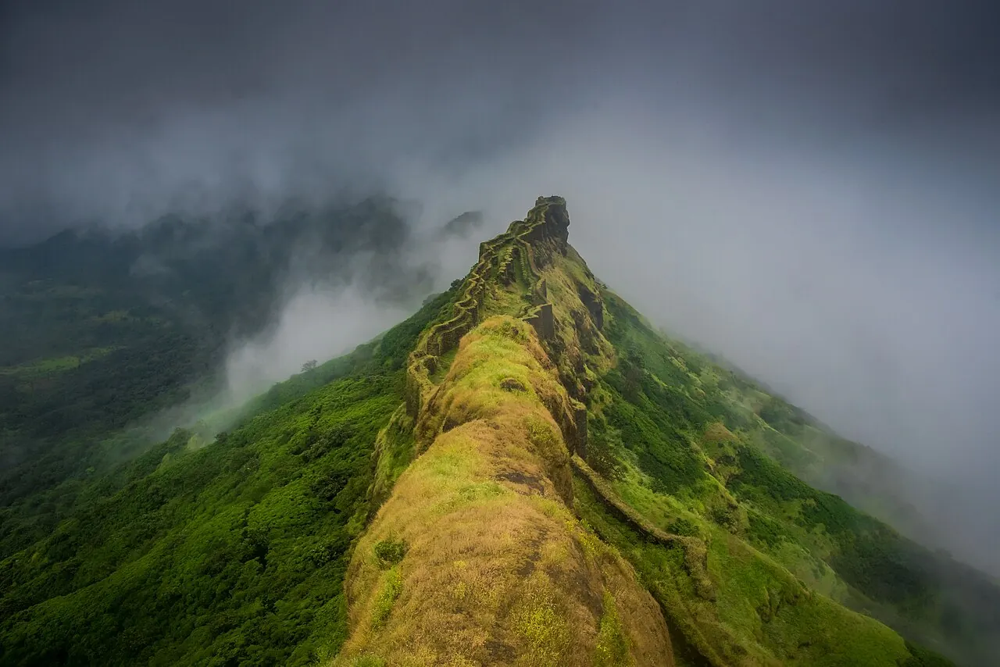

Documentary photograph
Documentary photographRaigad · Hill fort
Raigad
Raigad became the capital of Chhatrapati Shivaji Maharaj’s kingdom.
EasyMost Recommended

SWARAJYA EXPLORER / MAHARASHTRA, INDIA
Walk the ridges. Follow the sea walls.
Discover the forts that shaped Swarajya.
BEYOND THE POSTCARD
High on a Sahyadri ridge, a gateway still frames the valley. On the Konkan coast, walls rise straight from the sea. Every fort offers a different way into Maharashtra’s past.
Explore the places associated with Chhatrapati Shivaji Maharaj, Chhatrapati Sambhaji Maharaj and the many generations who built, defended and cared for them.
Meet the history behind the landscape ↗BEGIN WITH THE EXTRAORDINARY
Documentary photographRaigad · Hill fort
Raigad became the capital of Chhatrapati Shivaji Maharaj’s kingdom.
 Documentary photograph
Documentary photographPune · Hill fort
Known earlier as Murumbdev, Rajgad served as a major capital of Shivaji Maharaj before the move to Raigad.
 Documentary photograph
Documentary photographSatara · Hill fort
Shivaji Maharaj commissioned Pratapgad above the routes of the Jawali region.
 Documentary photograph
Documentary photographSindhudurg · Sea fort
Shivaji Maharaj developed Sindhudurg as an island stronghold off Malvan in the seventeenth century.
 Documentary photograph
Documentary photographAhilyanagar · Hill fort
Harishchandragad combines fort remains with a long sacred landscape of temples and caves.
 Documentary photograph
Documentary photographNashik · Hill fort
Harihar, also called Harshagad, guarded routes through the Trimbak range.
FORTS, PEOPLE & TURNING POINTS

Torna links the idea of Swarajya to the practical work of securing strongholds and governing their surrounding country.
Read the story ↗Pratapgad shows how fort building, terrain and campaign planning contributed to the consolidation of Maratha power.
Read the story ↗Raigad makes the political and administrative achievement of Swarajya visible in the form of a fortified capital.
Read the story ↗CHOOSE YOUR LANDSCAPE
LOOK A LITTLE CLOSER
FIND YOUR PACE
Source-based trek grades are provisional. Read the route explanation and check current conditions before travelling.
MADE WITH A LOVE FOR MAHARASHTRA
An independent project by Pranav Vinod Chame.
Inspired by Tanshiq and Karan.